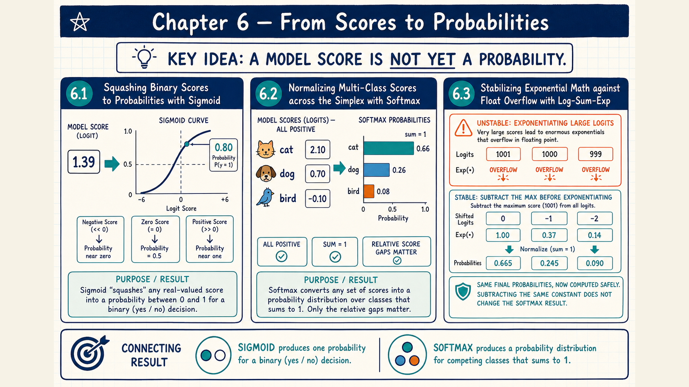
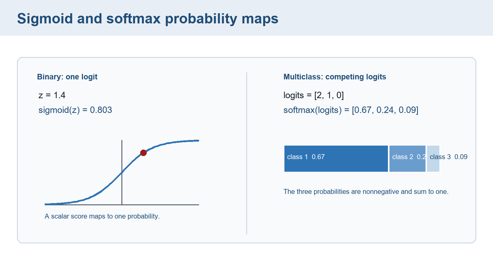

6 Sigmoid & Softmax: Turning Raw Scores into Probabilities
A score can rank alternatives but cannot yet be interpreted as probability. Probability functions turn the scores produced by a model into values suitable for decisions and losses.
A logit is a score, not yet a probability. Sigmoid converts one binary score, softmax normalizes competing class scores, and log-sum-exp keeps the calculation stable on real hardware.
In code, torch.sigmoid, torch.softmax, and torch.nn.functional.log_softmax implement probability transforms; stable loss modules avoid materializing fragile probability calculations.
Chapter 6 develops one required stage of the guide’s computation.

The numbered panels correspond to the chapter sections and show how each local result supplies the next operation.
6.1 Squashing Binary Scores to Probabilities with Sigmoid
A probability head maps logits to numbers that are nonnegative and sum correctly. The sigmoid handles binary classification; the softmax handles a multi-class distribution.
- Sigmoid: A smooth map from one logit to a probability between 0 and 1.
- Softmax: A map from a vector of logits to a categorical probability distribution.
- Class probability: The model’s normalized confidence for one class.
The sigmoid compresses all real-valued scores into the interval between 0 and 1. Large positive logits approach probability 1, and large negative logits approach probability 0.
Softmax compares logits against one another. Adding the same constant to every logit does not change the output distribution, but changing their relative gaps changes the probabilities.
Origin note: Logistic regression comes from statistical modeling: the logit link turns a linear score into the log-odds of a binary event.
Sigmoid maps a scalar logit to the open interval between zero and one. A zero logit gives probability one half; positive logits favor the event, and negative logits favor its complement.
The logit has a statistical interpretation as log-odds. Adding one unit to the logit multiplies the odds by e, which is why the scalar score \(w^\top x+b\) can serve as the natural parameter of a Bernoulli probability model.
Sigmoid maps any real-valued logit to a probability between 0 and 1.
Sigmoid:
\[ \sigma(z)=\frac{1}{1+\exp(-z)} \tag{6.1}\]
where z is scalar logit; σ(z) is predicted probability of the positive class.
Sigmoid is the inverse of the logit link; solving the log-odds equation for the probability gives the displayed sigmoid formula.
sigmoid compresses any real score into a probability, but large positive or negative scores saturate.
The derivative explains why very confident sigmoid outputs have small local gradients.
Sigmoid derivative:
\[ \sigma'(z)=\sigma(z)\bigl(1-\sigma(z)\bigr) \tag{6.2}\]
where z is scalar logit; σ(z) is sigmoid probability.
Differentiate the sigmoid formula and rewrite the result using the sigmoid value itself.
derivatives are small near 0 and 1, which is why saturated probabilities update slowly.
Odds compare probability of the event to probability of non-event.
Odds:
\[ \mathrm{odds}=\frac{p}{1-p} \tag{6.3}\]
The logit is the inverse of sigmoid for probabilities strictly between 0 and 1.
Logit:
\[ \operatorname{logit}(p)=\log\left(\frac{p}{1-p}\right) \tag{6.4}\]
For mutually exclusive classes, the logit vector must become one probability distribution over the available classes.
Softmax:
\[ p_i=\frac{\exp(z_i)}{\sum_j\exp(z_j)} \tag{6.5}\]
where \(z_{i}\) is logit for class i; \(p_{i}\) is normalized probability for class i.
Exponentiation makes every score positive; division by the sum of exponentials normalizes the row to total probability 1.
softmax preserves rank order but turns score gaps into probability ratios.
Example: Converting one logit to probability, odds, and log-odds
Use a positive logit of two and follow each quantity derived from it.
Probability:
\(z = 2\)
\(p = \sigma(z) = 1 / (1 + \exp(-2)) = 0.881\)
Odds and log-odds:
\(odds = \frac{p}{1-p} = \frac{0.881}{0.119} = 7.40\)
\(\operatorname{logit}(p)=\log(7.40)=2.00\)
Local slope:
\(∂p / ∂z = p(1-p) = 0.881(0.119) = 0.105\)
The sigmoid and logit calculations recover the same score in opposite directions.
Sigmoid interprets one score as the probability of one binary outcome. More than two mutually exclusive classes require all class scores to be normalized together.
6.2 Normalizing Multi-Class Scores across the Simplex with Softmax
Softmax generalizes the probability step from binary decisions to K classes or |V| next-token choices.
- Logit vector: A vector of unnormalized scores, one per class or vocabulary item.
- Categorical distribution: A probability distribution over one discrete outcome among K possibilities.
- Normalization: Dividing by the total score mass so probabilities sum to one.
Softmax appears in multiclass classification and in attention weights. In both cases it converts scores into a row that sums to one.
Softmax is a row-wise normalization: each row of logits becomes one categorical distribution, so the probabilities across the class or vocabulary axis sum to one.
For the running binary batch, sigmoid is applied independently to logits (0.9,-0.2,0.6), giving probabilities approximately (0.711,0.450,0.646). In a multiclass model, each example instead has a vector of competing class logits, and softmax normalizes across that class axis.
The axis matters operationally. A batch with dimensions B x K needs one distribution per row, so dim=-1 normalizes the K class entries. Normalizing along the batch axis would make unrelated examples compete with one another.
Softmax exponentiates each score and normalizes by the sum over all choices.
where \(z_{i}\) is logit for class i; \(p_{i}\) is normalized probability for class i.
Exponentiation makes every score positive; division by the sum of exponentials normalizes the row to total probability 1.
softmax preserves rank order but turns score gaps into probability ratios.
A probability vector defines a distribution over discrete labels.
Categorical sample:
\[ y\sim\operatorname{Categorical}(p_1,\ldots,p_K) \tag{6.6}\]
where y is the discrete class or token selected from the distribution; \(p_{i}\) is the probability assigned to class or token i; K is the number of possible classes or tokens in this distribution.
The probability vector supplies one mass value for each of K outcomes. A categorical draw selects exactly one outcome, with outcome i chosen in proportion to \(p_{i}\); the probabilities sum to one because softmax normalized the logits first.
The sampled class is an inference result; during training, the full probability vector remains available to the cross-entropy loss.
Example: Normalizing three competing class scores
Use three logits and normalize their exponentials across the class axis.
Scores:
\(z = (2,1,0)\)
Exponentials:
\(\exp(z) = (7.39,2.72,1.00)\)
\(\sum_{j} \exp(z_{j}) = 11.11\)
Probabilities:
\(p = (0.665,0.245,0.090)\)
\(0.665 + 0.245 + 0.090 = 1.000\)
The largest logit remains the most likely class, while all three outputs form one distribution.
Example: Sampling one class from a categorical distribution
For probabilities (0.7, 0.2, 0.1), cumulative masses are (0.7, 0.9, 1.0). A random draw of 0.75 lands in the second interval, so class 1 is selected.
Code example: Sigmoid for binary logits and softmax for multiclass logits
import torch.nn as nn
import torch
import torch.nn.functional as F
binary_logits = torch.tensor([0.9, -0.2, 0.6])
binary_probabilities = torch.sigmoid(binary_logits)
class_logits = torch.tensor([[2.0, 1.0, 0.0], [0.2, 0.2, 0.2]])
class_probabilities = F.softmax(class_logits, dim=-1)
print(binary_probabilities)
print(class_probabilities)
print(class_probabilities.sum(dim=-1))Each multiclass row sums to one, while each binary logit is transformed independently.
Softmax probabilities are meaningful only relative to the supplied candidate classes.
Softmax creates a probability distribution over classes, so its output can support likelihood, cross-entropy, and sampling. Exponentials must be evaluated carefully when scores are large.
6.3 Stabilizing Exponential Math against Float Overflow with Log‑Sum‑Exp
Numerical stability is the requirement that mathematically equivalent probability computations stay finite and accurate in floating-point arithmetic.
- Overflow: A value exceeds the representable floating-point range.
- Log-sum-exp: A stable way to compute the log of a sum of exponentials.
The risk appears when exponentials are applied to large logits. On paper, softmax can divide very large exponentials by their sum. On a computer, those exponentials may overflow before the division has a chance to cancel them.
The practical fix is to subtract the largest logit before exponentiation. This does not change the softmax distribution because every numerator and the denominator are scaled by the same constant factor. It only changes the numerical range of the intermediate tensors.
In PyTorch this is why stable library implementations such as torch.nn.functional.cross_entropy should receive raw logits. The function can combine log-softmax and negative log likelihood without materializing unstable probabilities first.
Subtracting the maximum logit keeps exponentials in a safer numeric range.
Stable softmax:
\[ \operatorname{softmax}(z)_i=\frac{\exp(z_i-\max(z))}{\sum_j\exp(z_j-\max(z))} \tag{6.7}\]
where \(z_{i}\) is logit for class or token i; m is maximum logit in the row; \(p_{i}\) is normalized probability.
Subtracting the same maximum m from every logit leaves all pairwise differences unchanged. The largest exponent becomes \(\exp(0)=1\) and the remaining exponentials are no larger than 1.
The subtraction changes numerical range, not the probability distribution.
The log denominator of softmax should be computed stably.
Log-sum-exp:
\[ \operatorname{logsumexp}(z)=m+\log\left(\sum_j\exp(z_j-m)\right),\quad m=\max_j z_j \tag{6.8}\]
where \(z_{j}\) is logits being accumulated; m is maximum logit; logsumexp(z) is stable log of the exponential sum.
Factor exp(m) out of the sum, take its logarithm, and evaluate the remaining exponentials after subtracting m. This avoids overflow when logits are large.
Log-sum-exp is the stable denominator calculation used by log-softmax and cross-entropy implementations.
Example: Stable softmax
For \(z=[1000,1001]\), subtract \(\max(z)=1001\) before exponentiation; this computes \(\exp([-1,0])\) instead of overflowing.
Example: Log-sum-exp
For \(z=[1,2]\), \(logsumexp=2+\log(\exp(-1)+1)=2.313\).
Stable normalization preserves the same probabilities without overflowing intermediate values. Those probabilities can now be turned into a concrete output choice.
6.4 Visualizing Sigmoid and Softmax Decision Geometries
Sigmoid and softmax map unrestricted logits to valid probability distributions.
Probability functions are deterministic maps from unnormalized scores to valid probabilities.

A logit can be any real number. Sigmoid produces one probability, while softmax produces nonnegative class probabilities that sum to one.
Sigmoid and softmax turn arbitrary scores into probabilities with different normalization rules.
Decoding uses probability vectors to select or sample visible outputs.